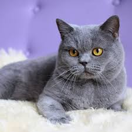

ariel
gairecxe tansacmeltan ertad shen
gairecxe tansacmeltan ertad shen
Domestic cats occur across the globe, though their popularity as pets varies by region. Out of the estimated 600 million cats worldwide, 400 million reside in Asia, including 58 million pet cats in China. The United States leads in cat ownership with 73.8 million cats. In the United Kingdom, approximately 10.9 million domestic cats are kept as pets.
